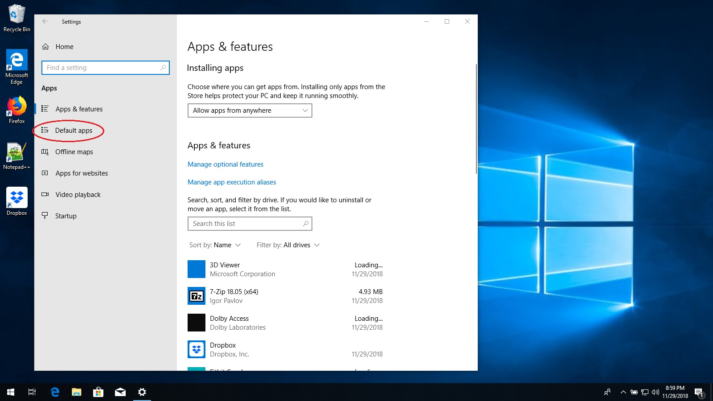

Changing the Default Web Browser
By default, your computer uses Microsoft Internet Explorer as the web browser application. Internet Explorer, or
IE, is an old and insecure web browser that exposes your computer to viruses and hackers. Fortunately, Windows
includes a newer, more secure web browser called Microsoft Edge. By using Edge instead of IE, you can greatly
reduce the chance of your computer being infected by a virus. To switch to Microsoft Edge, follow the instructions
below.
-
First, click on the start button and then the settings gear.

-
When the Settings app opens, click on the "Apps" button.

-
On the left side of the screen, click on "Default apps".

-
Scroll down until you see the words "Web browser" with a picture of a blue "e" below them.

-
Click on the blue "e".
-
A list of pictures and words will appear. Look for and click on the one that says "Microsoft Edge".
It has a white "e" beside it.

-
Close the Settings app. Congratulations, Microsoft Edge is now your default web browser!